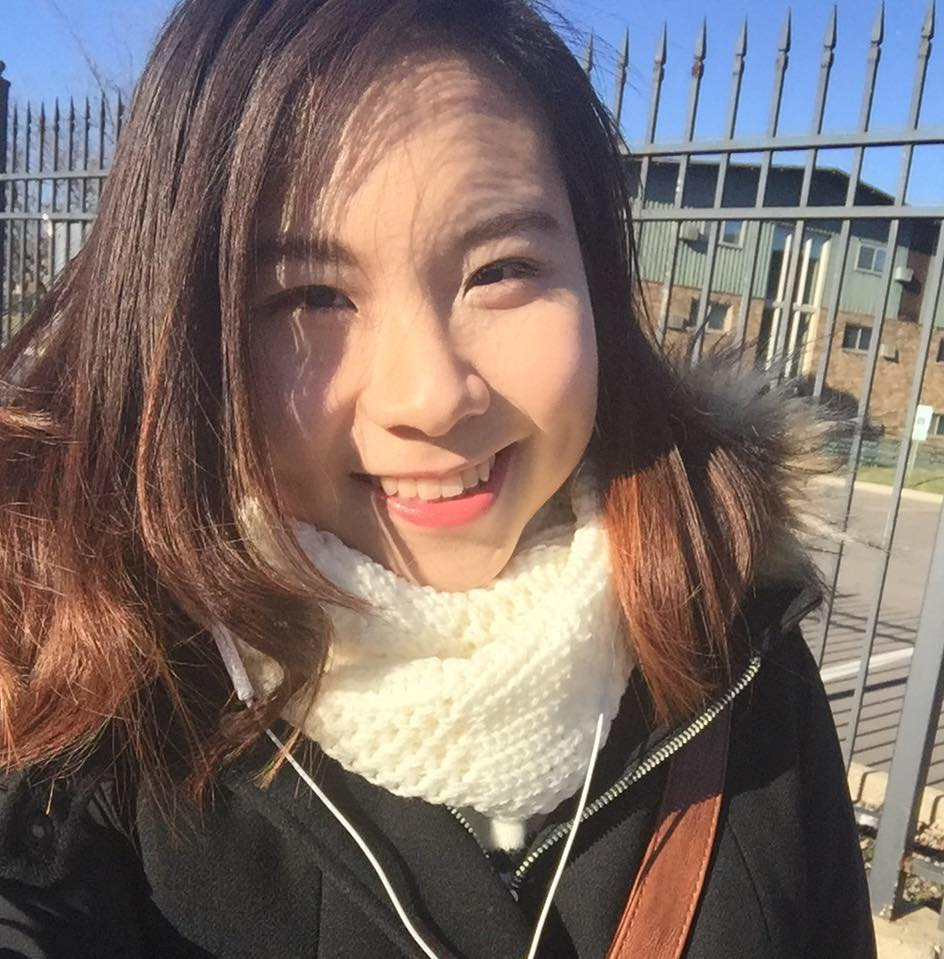
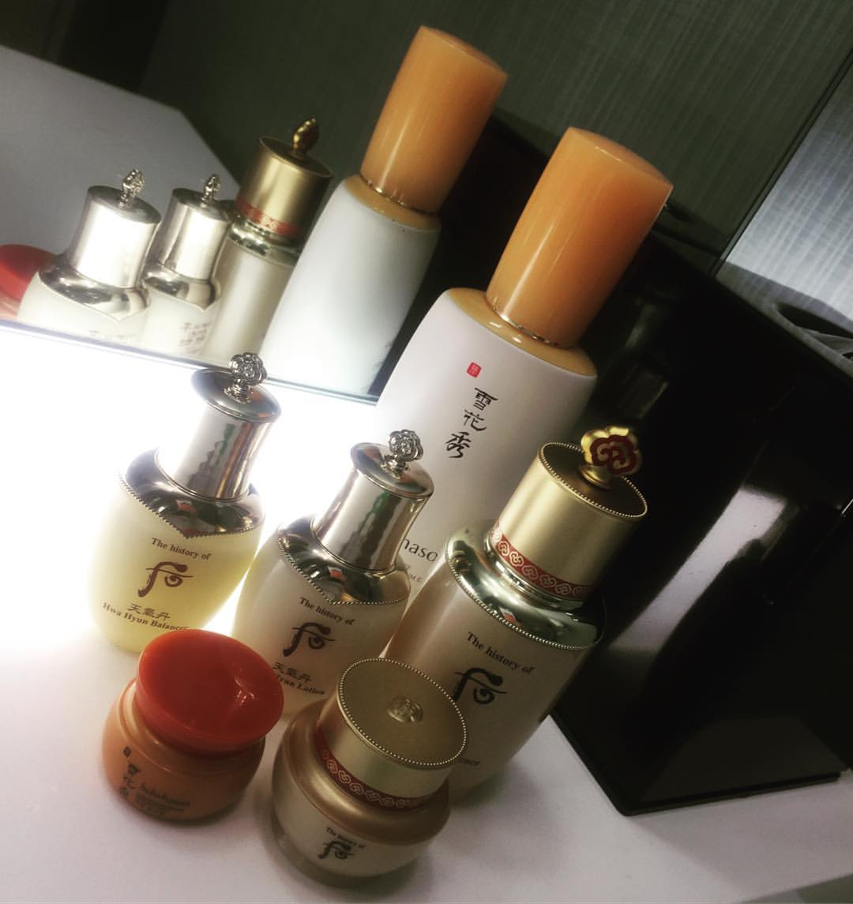
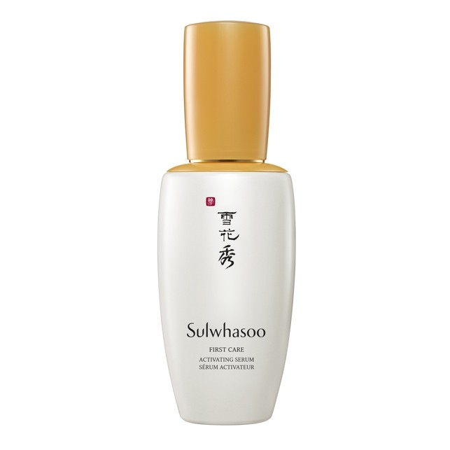
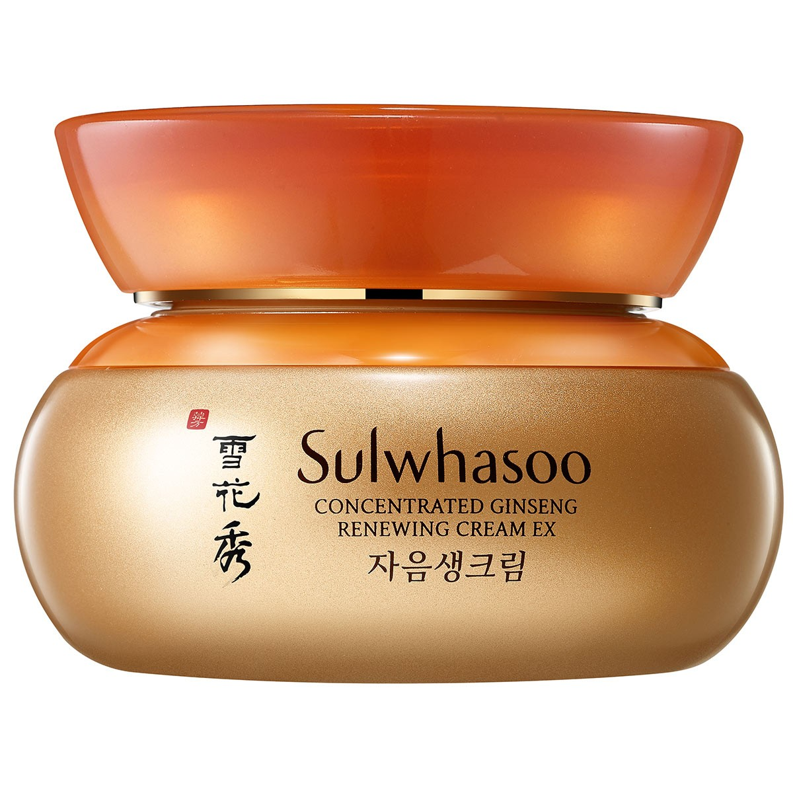
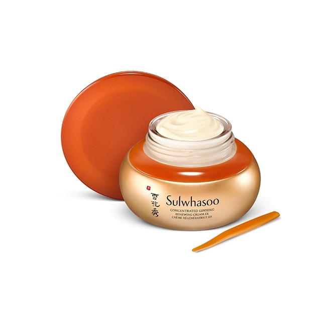

My name is Jolie Ha. I am a junior at UIUC (University of Illinois at Urbana Champaign). I'm here to share my skincare secret with you!
Today I am planning to introduce you my Fall 2017 favorite winter skincare products. I'm very excited to share it to you!
Okay! I'm going to talk about brands like The History of Whoo and Sulwhasoo today.
Some of you may know, The History of Whoo is a well-known Korean skincare brand that combines traditional skincare ingredients from the Korean royal palace with the latest skincare technology. I recently bought a set of their skincare to use because I heard very good feed back about it. The set that I bought has a small travel size Hwahyun Balancer, a small size Bichup Jayoon Cream, Hwanhyun Emulsion, a small and full size Soon Hwan anti-aging essence.
First of all, the packaging is wonderful. When I opened up the box, I felt like I was receiving a gift from Korean royalty, complete with the yellow cloth forming the backdrop of the gift set (yellow is considered to be a royal color in Asia, just like how purple is considered the color of royalty in the Western world).
The Hwahyun balancer acts as a first step on the skin, functioning as a lightweight formula providing moisture after cleansing. Then there’s two essences for you to choose from depending on the state of your skin. The self-regenerating anti-aging (JaSaeng) essence, the company’s best selling product world-wide, is a thick sticky yellow serum that contains ingredients such as cordyceps (a fungus), lotus, and other secret ingredients (I swear, it’s not just because I can’t read Korean. There are secret ingredients that have been passed down from Korean royalty listed in the technical info packet!). The other, the Soon Hwan anti-aging essence, contains tiny microbeads meant to increase circulation in the skin. In my opinion, the self regenerating anti-aging essence is pretty heavy; two pumps is enough for my entire face. It is great for winter months when my skin is so dry and in need of moisture. The Soon Hwan anti-aging essence is great though, perfect for use during any season.
Next, I used the Hwanhyun emulsion as a face cream, and it is also on the thicker side, providing a nice layer of moisture. In fact, when I use the emulsion, the next morning when I wake up my face is glowing as if I had done a face mask the night before! My favorite product in the kit may be the Bichup Jayoon cream though, which I personally use as an eye cream. It contains exotic ingredients such as deer antler collagen, cordyceps, and more, but all that aside, it’s a thick and luxurious cream that works well to hydrate the thin skin around my (tired) eyes. Overall, I liked that this set contained an entire nighttime skincare regimen, making it easy for me to go through each bottle and not have to think about what else I need. On the whole, the consistency of this line is thicker and heavier, which is better suited for more mature or dry skin. I think this set will become a favorite during the wintertime for me, although I will use the Jayoon cream as an eye cream all year round.
About Sulwhasoo, let’s talk about Sulwhasoo First Care Activating Serum EX!
Purpose: Sulwhasoo First Care Activating Serum EX is an anti-aging product that claims to hydrate, balance, and revitalize skin.
Best suited for: All skin types.
Do not use if: You are sensitive to botanical extracts, alcohol, honey, carrageenan, or anything else in the ingredients list.
When and how to use: Pat onto skin immediately after cleansing (or after actives if/when you use those). If you want to feel extra fancy and ladylike while doing so, which I personally do because I want to milk every last drop of raw experience out of the product, check out this Sulwhasoo video for the brand’s recommended application technique. I don’t particularly believe the patting influences effectiveness, but it feels good, and I like feeling good. Someday I’m going to buy me a pretty floaty dressing gown and a ladylike vanity to complete the experience.
Sulwhasoo First Care Activating Serum EX ingredients: Ophiopogon japonicus root extract, water, glycyrrhiza uralensis (licorice) root extract, butylene glycol, alcohol, betaine, glycerin, camellia sinensis leaf extract, paeonia albiflora root extract, nelumbo nucifera flower extract, polygonatum officinale rhizome root extract, lilium candidum bulb extract, rehmannia glutinosa root extract, honey, juglans regia (walnut) seed extract, portulaca oleracea extract, zizyphus jujuba fruit extract, biosaccharide gum-1, natto gum, PEG/PPG-17/6 copolymer, glyceryl polymethacrylate, Bis-PEG-18 methyl ether dimethyl silane, carbomer, PEG-60 hydrogenated castor oil, dextrin, theobroma cacao (cocoa) extract, xanthan gum, ethylhexylglycerin, chondrus crispus (carrageenan), phenyl trimethicone, hydrogenated lecithin, propylene glycol, tromethamine, disodium EDTA, phenoxyethanol, fragrance
And the final one is Sulwhasoo Concentrated Ginseng Renewing Cream EX
Sulwhasoo is celebrating 50 years of Ginseng Research by upgrading one of its all-time best-sellers, Concentrated Ginseng Renewing Cream. Experience unprecedented anti-aging from Sulwhasoo's 50 Years of Ginseng Research with the new and improved formula of the brand's iconic Concentrated Ginseng Renewing Cream, now in modern rose-tinted gold packaging.
The new Concentrated Ginseng Renwing Cream EX is the product of the brand's unparalleled expertise in Bio-conversion technology™, the world’s first extraction technique of ginseng’s key essences. Compound K is taken directly from ginseng roots, maximizing skin's natural renewing abilities.
Ginsenoside Re, the second key compound, is extracted from ginseng flowers and comes 6 times more concentrated than previous versions of the cream.
Concentrated Ginseng Renewing Cream EX aims to nurture both physical and spiritual beauty by offering a holistic beauty experience.
It delivers both physical anti-aging by strengthening skin’s natural regeneration and defense capacities, as well as spiritual anti-aging by cultivating and refining the emotional responses to aging.
The result: a rejuvenated-from-within skincare experience, and damaged, youth-depleted skin revived.